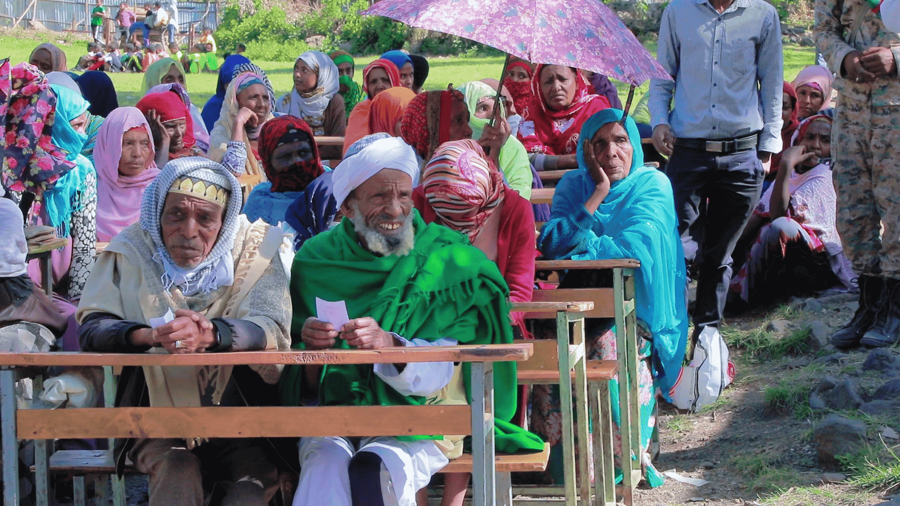
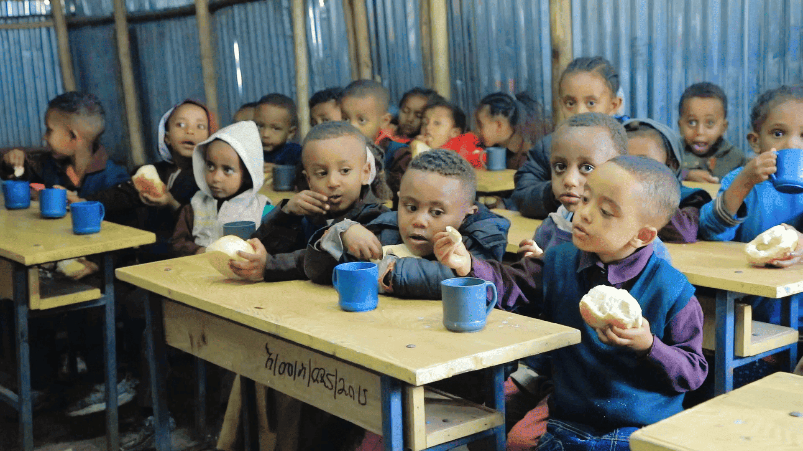
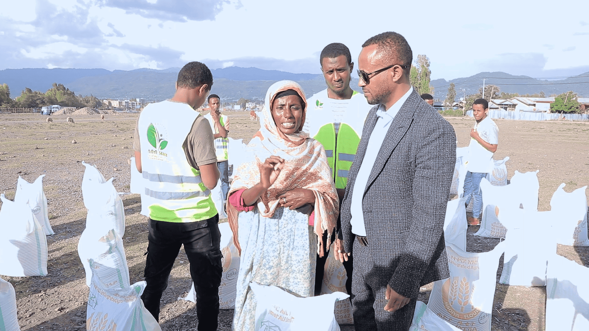
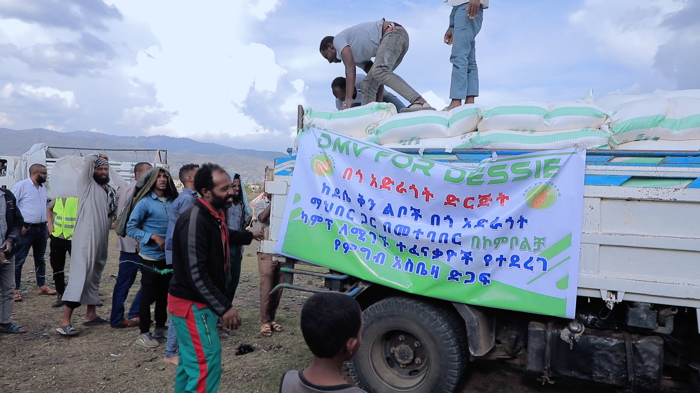

Hope, Help, and Humanity
for Dessie , Ethiopia.
DMV For Dessie was created by members of the Ethiopian diaspora community who share a common mission: supporting the people and future of Dessie through collective action, compassion, and sustainable community initiatives. Our organization focuses on creating long-term positive impact by supporting education, healthcare access, humanitarian assistance, youth empowerment, and local development efforts.


About us
Your involvement can change lives, strengthen communities, and build a better future.
Support families facing extreme hardship
Community-driven and transparent giving
Help restore dignity and rebuild lives
Share compassion with your community


No matter how small the donation you give will mean a lot to them, let's donate now to help fellow humans in need
"DMV" refers to the Washington, DC metropolitan area — commonly known as the DMV area, covering Washington DC, Maryland, and Virginia. "Dessie" refers to the city of Dessie in the Wollo Zone of the Amhara Region in northern Ethiopia. DMV for Dessie is a nonprofit organization founded in 2021 by Ethiopian diaspora members living in the DC, Maryland, and Virginia area who came together to support families, children, and elderly residents affected by conflict in Dessie, Ethiopia.
The organization is based in Silver Spring, Maryland, in the Washington DC metropolitan area. Its humanitarian programs and aid distribution operate primarily in Dessie, a city in the Wollo Zone of the Amhara Region in northern Ethiopia, as well as surrounding communities affected by conflict and displacement.
DMV for Dessie works through a network of trusted community members and local contacts in Dessie to identify the most vulnerable individuals and families. Funds raised in the United States are transferred and distributed on the ground in Dessie, ensuring aid reaches recipients directly. The organization maintains accountability through regular reporting and community oversight.
You can donate through several methods: online via dmvfordessie.org/donate, or by cash, check, or bank transfer by contacting the organization at +1 (571) 622-9455. All donations to DMV for Dessie are tax-deductible as the organization is a registered 501(c)(3) charity.